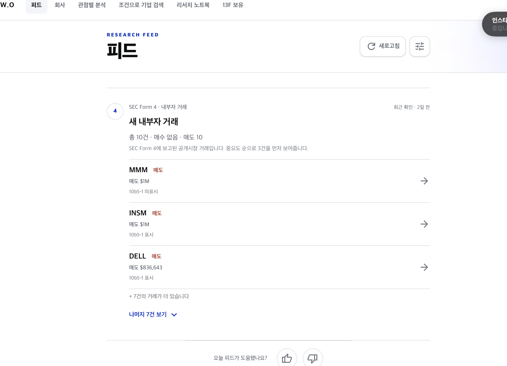
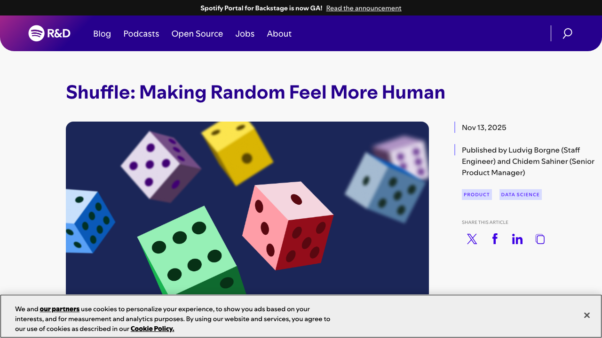

1. 후보가 “카드” 기준으로 부족하다
서버 후보 풀은 수십 건처럼 보여도, 대부분 Form 4다. 화면에서는 이들이 한 장의 “내부자 거래” 카드로 합쳐진다. 회사 이야기도 16개 후보 중 화면에는 한 시리즈만 나온다.
결과 서버에는 많이 있어도 화면에서는 약 9개다.
PULSE FEED · RANKING REVIEW · 2026-07-28
문제는 “랜덤이 약해서”가 아니라, 실제로 화면에 펼칠 수 있는 후보가 너무 적고, 반복 노출을 숨기는 규칙이 그 풀을 더 줄인다는 점이다.

| 구간 | 지금 | 변경 후 |
|---|---|---|
| 후보 수집 | 상위 60개가 Form 4에 치우친다. 발견용 쿼리도 우선순위 쿼리와 겹쳐 실제 신규 후보가 거의 없다. | 긴급·관심 종목과 별개로 일반 공시 30개, Form 4 후보 10개, 회사 이야기 후보 8개를 서로 다르게 수집한다. |
| 화면 카드 수 | Form 4 여러 건이 하나의 스택 카드로 합쳐지고, 회사 이야기도 한 장만 보인다. 보통 계정은 약 9개 카드뿐이다. | 일반 공시 30개는 개별 카드로 유지해 약 32개의 화면 후보를 확보한다. |
| 새로고침 | 회사 이야기 위치만 바뀌거나, 안 읽은 카드를 3번 봤다는 이유로 통째로 숨겨 화면이 더 비어 보인다. | 중요 카드는 고정하고 일반 카드 3개만 교체한다. “미클릭”은 삭제가 아니라 점수 감점으로 처리한다. |
| 개인화 저장 | 기기에서 본 횟수·새로고침 세대가 후보를 강하게 제거한다. | 기기 쿠키/로컬 저장소에는 최근 본 항목, 클릭/저장, 새로고침 횟수만 보관한다. 새 기기면 새 출발해도 된다. |
서버 후보 풀은 수십 건처럼 보여도, 대부분 Form 4다. 화면에서는 이들이 한 장의 “내부자 거래” 카드로 합쳐진다. 회사 이야기도 16개 후보 중 화면에는 한 시리즈만 나온다.
결과 서버에는 많이 있어도 화면에서는 약 9개다.
새로고침 3회 동안 클릭하지 않은 카드를 7일 동안 숨기는 규칙이 있다. 사용자가 단지 스크롤하지 않았을 뿐인데 후보가 제거되므로, 반복 새로고침할수록 남은 카드가 줄어든다.
결과 8회 새로고침 시 평균 화면 카드가 약 4.8개까지 감소했다.
공시·회사 이야기·내부자 거래
│
▼
① 후보 수집 (48개, 소스별 쿼터 보장)
│
▼
② 필터 (만료·중복·안전성·숨김 요청)
│
▼
③ 점수 (신선도 + 중요도 + 관심 종목 + 기기 행동)
│
▼
④ 다양성 선택 (같은 티커/형식 과밀 방지)
│
▼
⑤ 새로고침 교체 (일반 3개 + 회사 이야기 최대 1개)
│
▼
⑥ 백필 (비어 있으면 감점을 완화해 12개를 채움)
│
▼
화면 12개 + 기기 행동 기록
긴급, 관심 종목, 일반 8-K/6-K·기타 공시 30, Form 4 10, 회사 이야기 8로 나눈다.| 값 | 권장값 | 의미 |
|---|---|---|
| 화면 수 | 12 | 현재와 같은 정보 밀도 |
| 수동 새로고침 교체 | 일반 카드 3개 | 한 번에 4개(회사 이야기 포함) 정도가 새로 보여 “새 피드”로 인식 |
| 일반 카드 쿨다운 | 3회 새로고침 | 방금 보던 카드가 곧바로 되돌아오지 않음 |
| 탐색 폭 | 상위 점수에서 6등 범위 | 무작위 뽑기가 아닌, 좋은 후보끼리의 제한된 교체 |
| 회사 이야기 쿨다운 | 2회 새로고침 | 이미 있는 동작을 유지하되 한 시리즈만 과도하게 반복하지 않음 |
| 같은 티커 제한 | 상단 6개 중 최대 2개 | 한 회사 공시가 화면을 잠식하지 않음 |
첫 진입 [긴급/활성] [상위 일반 8개] [내부자 스택?] [회사 이야기?] 첫 새로고침 긴급/활성은 유지 일반 3개: 쿨다운을 지킨 새 후보로 교체 회사 이야기: 최근 2회에 보지 않은 시리즈가 있을 때 1개 교체 → 화면에서 약 4개가 변함 두 번째~세 번째 새로고침 직전 3회 동안 본 일반 카드는 우선 제외 점수가 비슷한 상위 6개 후보에서만 선택 → 새로우면서도 저품질·낮은 중요도의 카드가 튀어나오지 않음 후보가 부족한 경우 쿨다운을 오래된 카드부터 한 단계씩 완화 → 빈 피드나 “같은 카드만 남는” 상태를 만들지 않음
유지 수 / 교체 수 / 쿨다운 완화 여부 / 중복 티커 수를 기록한다.